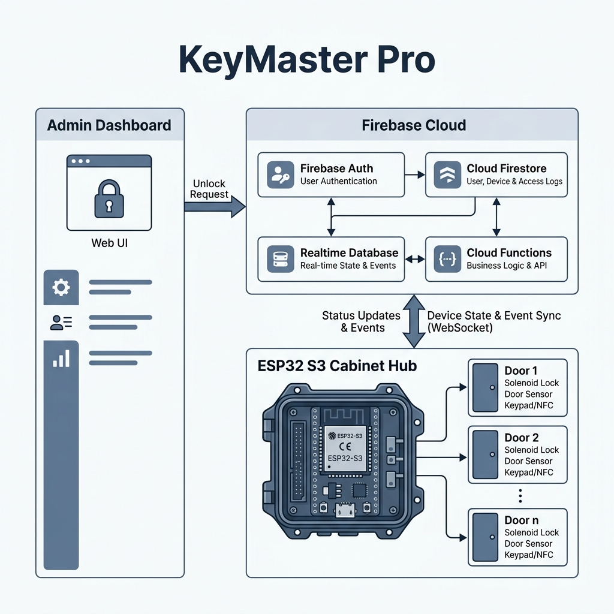

Professional Staff Key Management System
**KeyMaster Pro** is a high-performance, real-time cabinet management system built with **Next.js 15**, **Firebase**, and **ESP32** hardware. It provides intelligent staff key management with sub-second latency, designed for reliability on the **Firebase Spark Plan**.

| Component | GPIO Pin | Mode | Note |
|---|---|---|---|
| Cabinet Lock | 4 | OUTPUT | Solenoid Signal |
| Door Switch | 5 | INPUT | Hall Effect / Micro-switch |
| Master Key | 6 | INPUT | Presence & Reset Trigger |
| Buzzer | 12 | OUTPUT | Audible Feedback |
| Status LED | 2 | OUTPUT | Visual Feedback |
| RGB LED | 46 | DATA | WS2812B (RGB Status) |
| Key Pegs | 7-39* | INPUT | 10 Individual Slots |
Manual WiFi Reset: To clear saved credentials, hold down the Master Key in slot 1 while powering on the device.
# 1. Install dependencies
npm install
# 2. Run locally
npm run dev
# 3. Deploy
firebase deployFlash using Arduino IDE or PlatformIO. Ensure WiFiManager and Firebase-ESP-Client libraries are installed. Select Maker Feather AIoT S3 as the board.